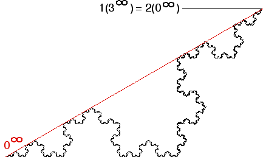

| Consider the point 1(3infinity) = 2(0infinity), the apex of the Koch curve. |
| To show this point has no tangent, we shall produce a sequence of points converging to the apex, with the chords from these points to the apex alternating over a 30 degree range. |
|  |
| First conider the chord between the apex and 0infinity. |
| Click the picture for the next point in the sequence. |
Return to Addresses in the Koch Curve.